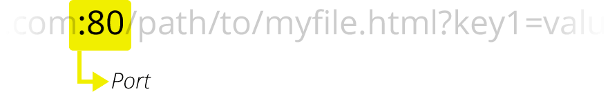
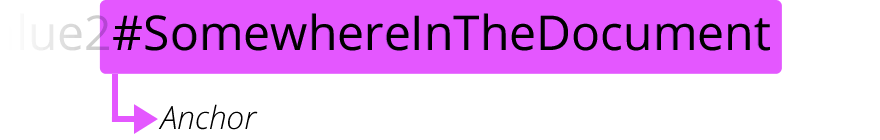
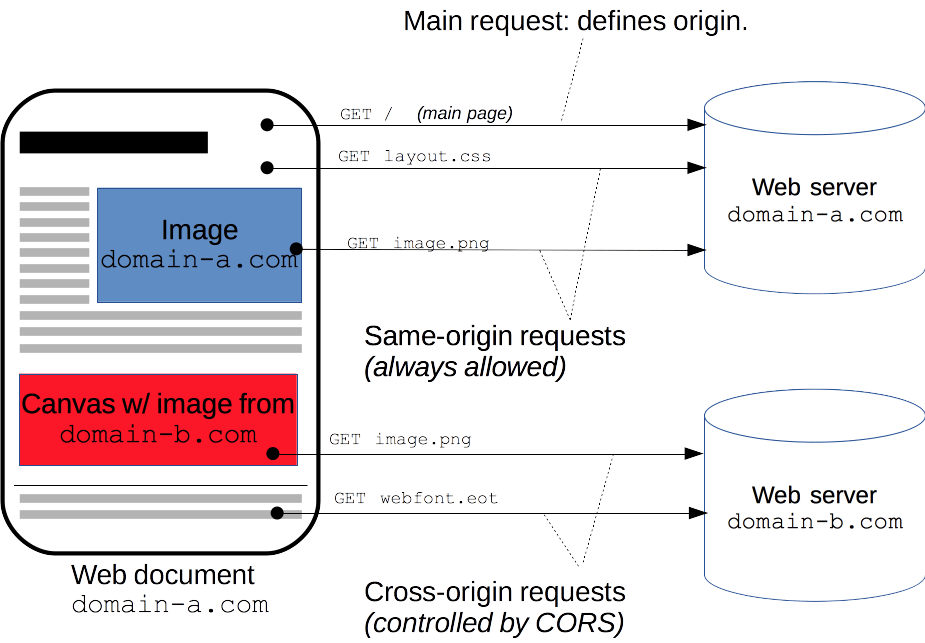
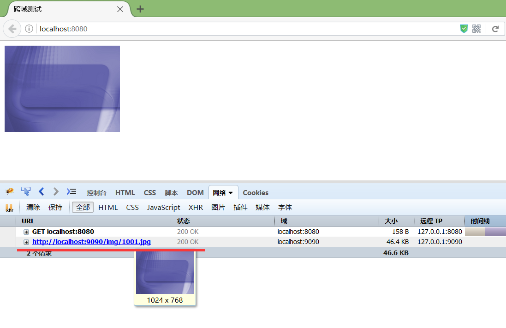

跨域 #
介绍 #
跨域，指的是从一个域名去请求另外一个域名的资源，即跨域名请求。跨域时，浏览器不能执行其他域名网站的脚本，这是由浏览器的同源策略造成的，是浏览器施加的安全限制， 跨域限制访问，其实是浏览器的限制。
同源策略是浏览器最核心也最基本的安全功能，不同源的客户端脚本在没有明确授权的情况下，不能读写对方资源 ，这是一个用于隔离潜在恶意文件的重要安全机制。所以跨域问题只在浏览器中出现，如果客户端是APP的话，那跨域问题就不存在了。 PS：IE端口除外，IE对同源策略的定义有略微的不同，具体可以查看文末给出的同源策略的链接。
为什么会跨域 #
说到跨域不得不谈的就是浏览器的同源策略，跨域也是因为浏览器这个机制引起的，这个机制的存在还是在于安全
1.什么是源 #
Web内容的源由用于访问它的URL 的方案(协议)，主机(域名)和端口定义。只有当方案，主机和端口都匹配时，两个对象具有相同的起源。
- 所谓同源是指：域名，协议，端口相同，即两个资源具有相同的源。 只要三者之间有一个不同，就是跨域（跨源）
- 同源不同源一句话就可以判断：就是url中 scheme host port 都相同即为同源。 下面认识下url 结构中的这三个部分
2. URL结构 #
URL 代表着是统一资源定位符（Uniform Resource Locator）。URL 无非就是一个给定的独特资源在 Web 上的地址。
-
URL有如下结构组成：
-
Schme 或者 Protocol

- Domain Name 也叫做host域名

- port 端口号


- Parameters参数

- Anchor 锚点，一般用于定位位置


3. 同源不同源举例 #
举一下同源不同源的例子，便于理解
- 同源例子
| 例子 | 原因 |
|---|---|
| http://example.com/app1/index.html <==> http://example.com/app2/index.html | 相同的 scheme http 和host |
| http://Example.com:80 <==> http://example.com | http 默认80端口所以同源 |
- 不同源例子
| 例子 | 原因 |
|---|---|
| http://example.com/app1 <==> https://example.com/app2 | 不同的协议 |
| http://example.com <==> http://myapp.example.com | 不同的host |
| http://example.com <==> http://example.com:8080 | 不同的端口 |
4. 浏览器为什么需要同源策略 #
同源策略是一个重要的安全策略，它用于限制一个origin的文档或者它加载的脚本如何能与另一个源的资源进行交互。它能帮助阻隔恶意文档，减少可能被攻击的媒介。
5. 常规前端请求跨域 #
在没有前后端分离的时候，跨域问题往往是很少的。因为前后端都部署到一起。现在前后端分离不管vue /react 面临跨域请求的问题。
下面是引用官网描述的一张图来解释跨域：


跨源域资源共享（CORS）机制允许 Web 应用服务器进行跨源访问控制，从而使跨源数据传输得以安全进行。现代浏览器支持在 API 容器中（例如 XMLHttpRequest 或 Fetch）使用 CORS，以降低跨源 HTTP 请求所带来的风险
二、前端解决方案 #
- jsonp
JSONP的原理非常简单，就是HTML标签中，很多带src属性的标签都可以跨域请求内容，比如我们熟悉的img图片标签。同理，script标签也可以，可以利用script标签来执行跨域的javascript代码。通过这些代码，我们就能实现前端跨域请求数据。
jsonp 可以在前端解决跨域问题，但是只是针对于get请求。实现方式可以引用一些npm 第三方库实现，jquery 也是带的。
可以在npm 搜下jsonp 库实现，非常简单。
jsonp原理 #
我个人理解jsonp实际上是钻了空子然后利用这个空子来间接的实现了 get方式的跨域请求逻辑 以载入脚本方式去请求数据然后把脚本响应的数据包在回调脚本函数的参数里面 回调函数一执行就拿到了数据
-
首先我们需要明白，在页面上直接发起一个跨域的ajax请求是不可以的，但是，在页面上引入不同域上的js脚本却是可以的，就像你可以在自己的页面上使用
标签来随意显示某个域上的图片一样
-
比如我在8080端口的页面上请求一个9090端口的图片：可以看到直接通过src跨域请求是可以的


那么看下如何使用